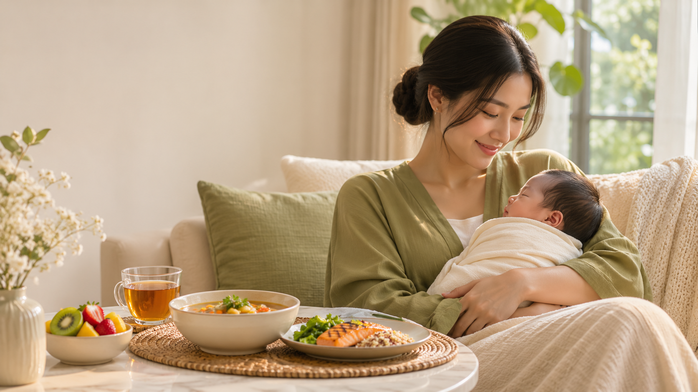
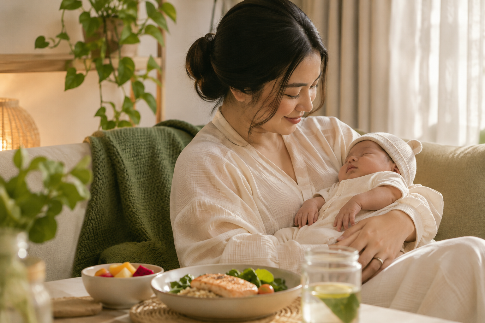

Nutrisi yang diperhatikan
Menu dirancang dengan perhatian pada kebutuhan makan Ibu selama masa pasca melahirkan.
POSTPARTUM MEALS, MADE WITH CARE
Catering sehat dan halal untuk ibu pasca melahirkan. Makanan bernutrisi, lezat, dan variatif agar Ibu dapat menikmati masa pemulihan dengan lebih nyaman — tanpa repot menyiapkan hidangan setiap hari.


Masa setelah melahirkan adalah waktu yang penuh perubahan. Ibu membutuhkan perhatian, kenyamanan, dan asupan yang baik — namun menyiapkan makanan setiap hari tidak selalu mudah.
Nourma hadir sebagai layanan catering sehat dan halal yang dirancang untuk ibu pasca melahirkan, dengan pilihan hidangan bernutrisi, lezat, dan beragam.
Kenapa Nourma? ↗Hal-hal kecil yang membantu hari-hari Ibu terasa lebih ringan.
Menu dirancang dengan perhatian pada kebutuhan makan Ibu selama masa pasca melahirkan.
Pilihan hidangan halal dengan bahan yang dipilih secara cermat.
Ibu dapat menikmati hidangan siap santap tanpa perlu menyiapkan makanan setiap hari.
Menu yang beragam agar waktu makan terasa menyenangkan dan tidak monoton.
Temukan pilihan catering yang sesuai dengan kebutuhan Ibu. Informasi paket, durasi, harga, dan area pengiriman akan segera tersedia.
Tanyakan Paket ↗Untuk kebutuhan makan sehari-hari.
DETAIL SEGERAPraktis dengan pilihan menu yang variatif.
DETAIL SEGERADiskusikan kebutuhan dan preferensi Ibu.
DETAIL SEGERACeritakan kebutuhan dan area pengiriman Ibu.
Diskusikan pilihan menu, paket, dan jadwal yang tersedia.
Konfirmasi pesanan dan nikmati makanan Nourma sesuai jadwal.
Berikut beberapa pertanyaan yang mungkin membantu.
Nourma berfokus pada hidangan halal. Informasi terkait proses dan sertifikasi halal akan dijelaskan sesuai status yang telah dikonfirmasi.
Silakan hubungi Nourma untuk mendiskusikan preferensi menu, pantangan, atau kebutuhan khusus. Ketersediaan penyesuaian perlu dikonfirmasi.
Area layanan dan biaya pengiriman akan dikonfirmasi saat menghubungi Nourma.
Hubungi Nourma untuk memperoleh informasi paket, durasi, menu, dan harga terbaru.
Ingin tahu lebih lanjut tentang menu dan paket Nourma? Kami siap membantu.
Hubungi via WhatsApp ↗ WhatsApp belum dikonfigurasi — ganti nomor pada js/script.js sebelum dipublikasikan.Halo, Ibu! Pilih cara untuk bertanya tentang menu dan paket Nourma.
Chat via WhatsApp ↗ AI chat demo: jawaban dasar. WhatsApp perlu nomor resmi Nourma.Nourma hanya mengumpulkan informasi yang Anda berikan secara sukarela, seperti nama dan nomor WhatsApp saat Anda menghubungi kami untuk informasi menu atau paket.
Informasi Anda digunakan semata-mata untuk merespons pertanyaan dan permintaan layanan Nourma. Kami tidak menjual, menyewakan, atau membagikan data pribadi Anda kepada pihak ketiga untuk tujuan pemasaran.
Kami menjaga kerahasiaan informasi Anda dan hanya menggunakannya untuk keperluan komunikasi layanan Nourma.
Website ini menggunakan localStorage hanya untuk menyimpan preferensi privasi Anda di perangkat ini. Tidak ada cookie pelacak pihak ketiga yang digunakan.
Jika Anda memiliki pertanyaan tentang kebijakan privasi ini, silakan hubungi kami melalui WhatsApp yang tertera di halaman Hubungi Kami.
Terakhir diperbarui: 2024. Kebijakan ini dapat berubah sewaktu-waktu.